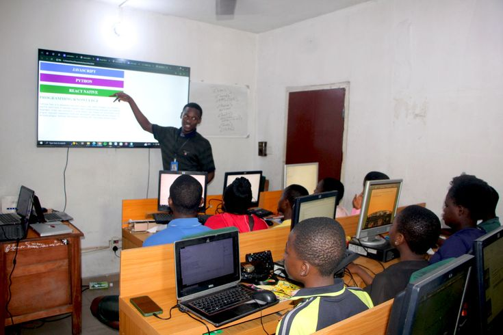

Education June 2025
Why High School Graduates Must Learn Computer Basics Before University
Every year, thousands of Kenyan students enter Computer Science and IT degrees without ever having written a single line of code — or even opened a terminal. Here is why the foundation matters more than ever.